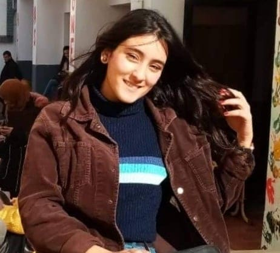

|

|
Arij kortas
A science and communication technology's student at ISITCOM University
I think that we can't live without hope and motivation 💖💖
|
If you need my contact please click here 😊
Study Experience
|
Dates
|
study
|
|
2017-2018
|
I'have finished my baccalaureate-experimental science
|
|
2018-2019
|
the first year on licence of science and communication technology
|
|
2019-2020
|
the second year on licence of A science and communication technology
|
About Me
I'am a hopeful ,Creative,hardworking and helpful person , adding to these qualities I enjoy working in groups because I think that working in groups can let you acquired more and more experience and ideas that you will help you in your professional life
Soft skills
I had a certification :
🤞for my participation in innovation camp with INJAZZ
🤞in Skills from google with INJAZZ
🤞in steer your Career as professional skills development
🤞for my participation in a big event that takes place in our university"ISITCOM" every year "nuit de l'info"
🤞for My participation in a big event that takes place in our university"ISITCOM" every year "youth opportunity":I was a member from sponsorship team
🤞for my participation in a training in deep Learning
Added to that I had a professional traineeship in the regional telecommunications department of sousse(Télécom)
Personal project
🤞Smart Lock door with face recognition (open-cv and raspberry)
🤞controlling car with arduino
🤞a mini web project with database using HTML,CSS,PHP,javascript,My php admin,Local web server XAMPP
Languages
- deutsh :I had a certification in deutsh level one with a mention very well
-
Frensh
-
English
Skills
(Maximum ⭐⭐⭐⭐) 😃😃
|
linux ⭐⭐⭐
|
|
JAVA develloper ⭐⭐
|
|
Python Devlopper ⭐⭐⭐
|
|
Android developper ⭐
|
|
Web developper ⭐⭐⭐
|
|
Marketing ⭐⭐
|
Hobbies
- listenning to Music
- watching horror Movies 😱
- Discover new places